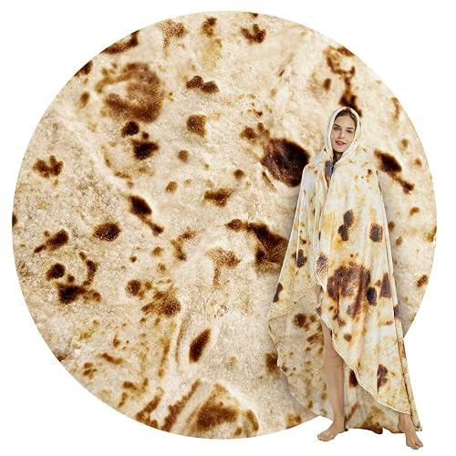
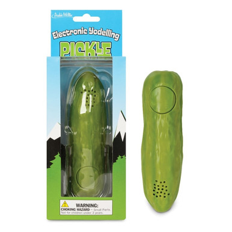
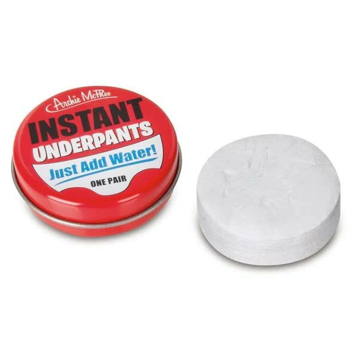
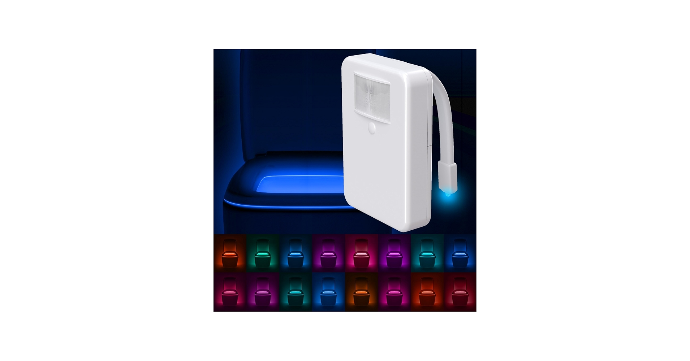
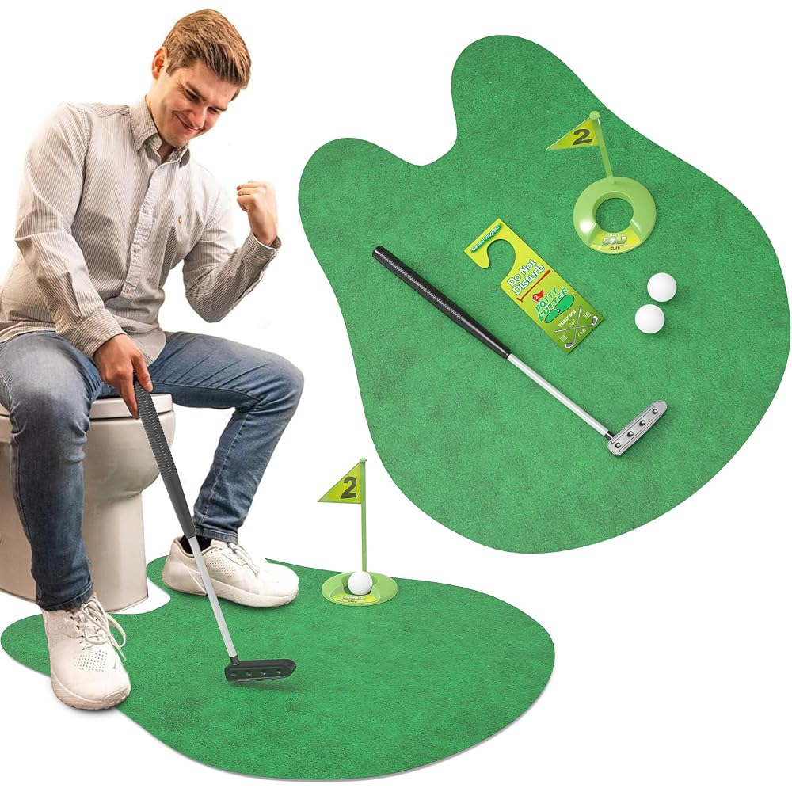
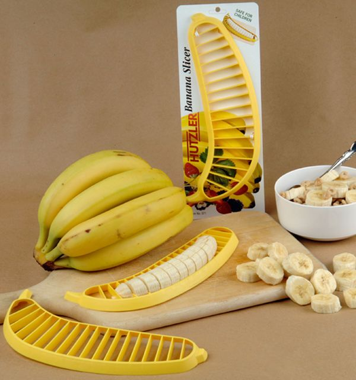
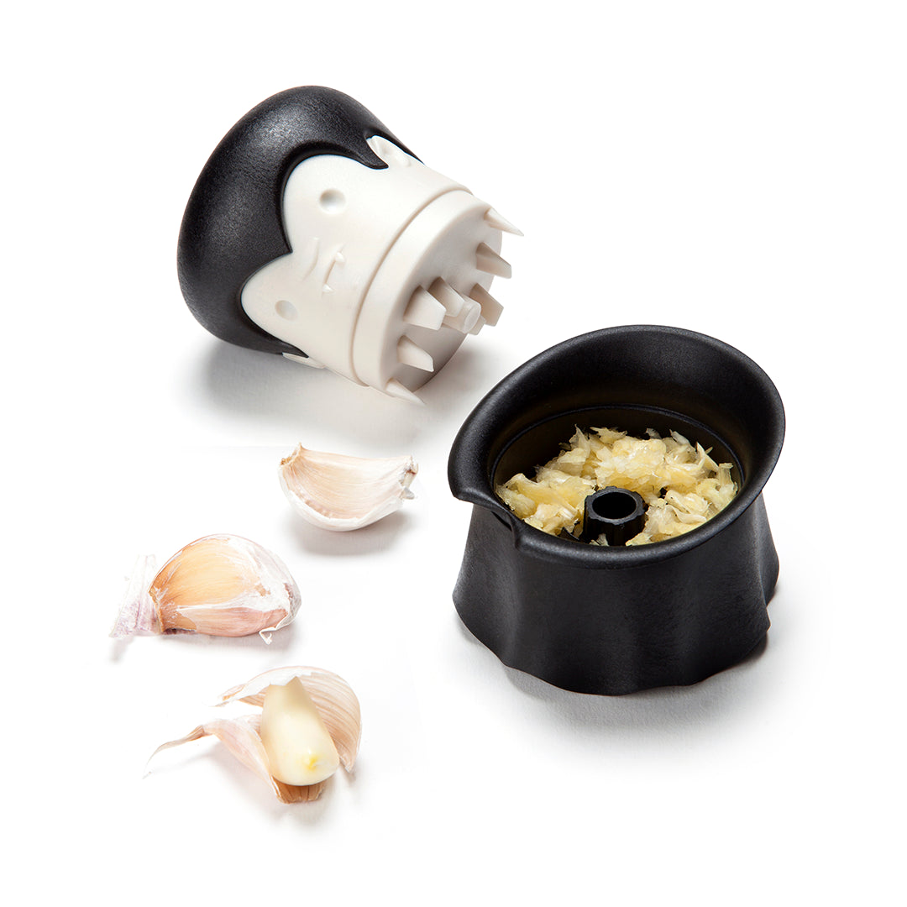
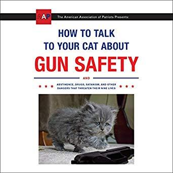
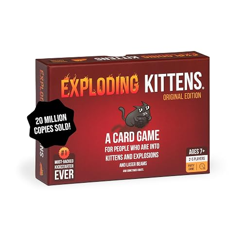
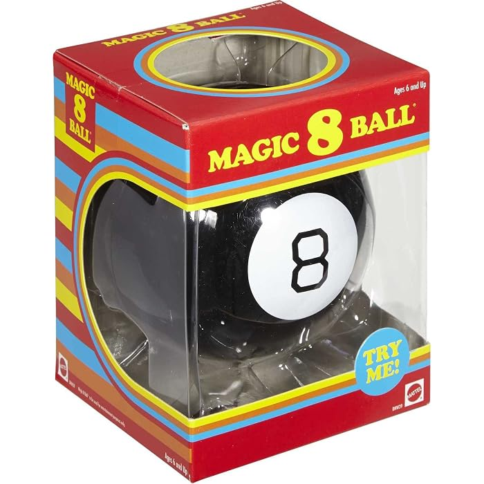

Best White Elephant Gifts Under $25: 10 Funny Picks That Aren't Junk
Most white elephant gifts fail the same way: a big laugh at the unwrapping, then a quiet trip to the junk drawer. The gifts people remember — the ones that get stolen twice and argued over — are funny for five seconds and useful for the rest of the year. That is the whole rule behind this list. Every pick below is a real product from a recognizable maker, sits in the under-$25 street-price range, and passes the January test: whoever ends up with it is still using it after the holidays.
A word on prices: we deliberately print none. Amazon prices on popular gag gifts move daily in the run-up to Christmas, so a number printed in October would be a small lie by December. Each pick tells you what it is and why it lands; the button takes you to the live price. Shopping for a specific person instead of an exchange? The men's and women's guides under $25 are built the same way, and the stocking stuffers guide covers the even-smaller stuff.
How these picks were chosen
- Funny first, useful second, junk never. If a pick's only job is the laugh, it didn't make the list. Every item here does something real — warms, slices, crushes, lights, serves or plays.
- Recognizable products with deep review histories. White elephant classics earn that status over years of exchanges. These are the established versions from the original makers, not this season's knockoffs.
- Work-appropriate humor. Absurd is good; awkward is not. Everything here can be unwrapped in front of a boss, a grandparent or both.
- Wrap-and-go. Nothing here needs assembly, a subscription or a companion purchase to land — batteries and caveats are noted on the card where they exist.
The unwrapping moment

1. SeaRoomy Burrito Tortilla Throw Blanket — the gift that becomes a photo shoot
A giant round flannel blanket printed on both sides to look exactly like a toasted flour tortilla, so the recipient can roll themselves into a human burrito — which they will do, immediately, in front of everyone. The 90-inch size wraps an adult completely; smaller sizes down to 47 inches exist on the same listing if your budget or your recipient is smaller. Underneath the joke it is a legitimately soft, warm, machine-washable throw, which is why this is the most-stolen gift at every exchange it shows up to.
- Pros: the biggest laugh-per-dollar on the list; genuinely cozy 285 GSM flannel; sizes from kid to adult on one listing.
- Cons: the 90-inch is a lot of blanket to store; the print fools exactly no one into thinking it's food after the first minute — the cozy is what lasts.
Best for: the exchange's designated comedian, couch nappers, and anyone whose photo will end up in the group chat.
Check current price
2. Archie McPhee Yodeling Pickle — the undefeated classic
A 5¼-inch plastic pickle that yodels at the push of a button. That is the entire product, and it has been reducing rooms to tears for years: 4.6 stars across roughly 12,000 ratings, most of them from people who gave it at an exchange and watched it get fought over. Batteries are included, so it performs straight out of the wrapping paper — expect it to be demonstrated, hidden in coworkers' desks, and yodeled at intervals for the rest of the party.
- Pros: works the second it's unwrapped; small, light and trivially easy to wrap; a proven crowd reaction, not a gamble.
- Cons: it has one volume, and that volume is enthusiastic — quiet offices be warned; runs on replaceable button-cell batteries.
Best for: gag-gift traditionalists, office exchanges, and the person who has everything except a yodeling pickle.
Check current price
3. Archie McPhee Instant Underpants — just add water, in case of emergency
A pocket-size red tin holding one pair of real cotton underpants, compressed into a disc. Add water and they expand into a wearable, one-size-fits-most pair. It is Archie McPhee's longest-running emergency joke — 300+ sell every month and it's an Amazon's Choice pick — and the rare gag with a genuine use case: travelers, festival-goers and new parents actually keep a tin in the glove box or diaper bag, because a spilled coffee or a rained-out day is exactly when a dry spare pair stops being funny and starts being genius.
- Pros: tiny tin, huge reaction; real 100% cotton, machine washable after expanding; costs less than most wrapping paper.
- Cons: one pair, one size — it's an emergency spare, not a wardrobe upgrade; the expansion surprise works once (the pair itself stays usable).
Best for: travelers, new parents, the accident-prone, and anyone whose group chat has a "remember when" story.
Check current priceBathroom humor that actually helps

4. LumiLux Toilet Night Light — the disco toilet that earns its keep nightly
A motion-sensor light that hooks over the toilet rim and turns the bowl into a glow of your choice: 16 colors, a rotating carousel mode, and a five-stage dimmer. It sounds like a prank and unwraps like one, but the first 2 a.m. bathroom trip without a blinding overhead light converts everyone. The flexible arm fits any standard toilet, the sensor only fires in the dark when someone approaches, and LumiLux backs it with a lifetime replacement pledge.
- Pros: genuinely useful every single night; installs in under a minute with no tools; the color carousel mode is a hit with kids.
- Cons: needs 3 AA batteries, which are not included — tape a pack to the box and you're a hero; it's water-resistant, not waterproof, so placement on the rim matters.
Best for: parents, night owls, guest bathrooms, and anyone whose household negotiates over the bathroom light.
Check current price
5. Potty Putter Toilet Golf Game — for the golfer who never stops practicing
A putting green shaped to fit around the base of a toilet, with a mini putter, two balls, a cup-and-flag hole, and a "Do Not Disturb" door hanger for serious sessions. Every exchange has a golfer, and this is their gift: it gets an instant laugh, a demonstration nobody asked for, and then years of genuinely improved short-game practice. Fairly Odd Novelties has sold this set for years, and the whole thing rolls up and stores in the box it came in.
- Pros: complete set — green, putter, balls, cup, flag and door hanger; zero setup; the door hanger alone is worth the unwrap.
- Cons: needs a bathroom with a little floor space around the bowl; non-golfers will still play it, which is either a pro or a household scheduling problem.
Best for: the golf-obsessed, dads, and anyone whose phone battery dies in the bathroom anyway.
Check current priceKitchen jokes that earn their drawer space

6. Hutzler 571 Banana Slicer — the most famous kitchen gag on Amazon
Press it onto a peeled banana and you get a full set of even slices in one motion. The 571 is an internet legend — its thousands of deadpan five-star reviews ("What can I say about the 571 that hasn't already been said about the wheel, penicillin or the iPhone…") are half the gift, so read a few aloud at the exchange. The other half is real: it's Amazon's Choice in its category, dishwasher safe, BPA-free, and safer than a knife for kids making their own cereal.
- Pros: genuinely speeds up breakfast and lunchbox prep; the review section is built-in entertainment; cheap enough to pair with a bunch of bananas as the wrapping.
- Cons: it is gloriously single-purpose; unusually curved bananas defeat its geometry, as the famous one-star reviews document at length.
Best for: breakfast people, parents of small kids, and anyone who appreciates a product with a literary legacy.
Check current price
7. OTOTO Gracula Garlic Crusher — the vampire who minces
Count Gracula's head twists to crush garlic cloves into mince — feed the vampire the one thing folklore says he fears. OTOTO is a design-award studio whose whole line works this way (funny object, real engineering), and this one also handles ginger, nuts, chili and herbs, keeps your hands odor-free, and rinses or dishwashes clean. It sells over a thousand a month because cooks who receive it as a joke end up using it daily.
- Pros: a real tool with a real brand behind it; no peeling needed and hands stay clean; small enough to be a stocking stuffer too.
- Cons: capacity is a clove or two at a time — it's built for weeknight cooking, not catering; it's a twist crusher, not a heavy-duty metal press.
Best for: home cooks, garlic maximalists, and the goth-hearted kitchen romantic.
Check current priceThe ones that get passed around all night

8. How to Talk to Your Cat About Gun Safety — the book with the perfect title
Zachary Auburn's deadpan parody manual, presented with total sincerity by the "American Association of Patriots": how to talk to your cat about gun safety, and also abstinence, drugs, satanism and other dangers that threaten their nine lives. The cover alone wins the unwrapping — then the book gets passed hand to hand and read aloud for the rest of the night, because the commitment to the bit never wavers. It's a long-running bestseller in Amazon's humor category for a reason.
- Pros: the funniest title in print; a real, readable book, not a novelty cover over blank pages; paperback price leaves room in any exchange budget.
- Cons: the humor is bone-dry satire — it lands hardest with cat people and fans of deadpan; it's a one-joke premise, executed perfectly, but one joke.
Best for: cat owners, dry wits, and the relative whose sense of humor runs deadpan.
Check current price
9. Exploding Kittens (Original Edition) — the game that gets played the same night
A kitty-powered version of Russian roulette: draw cards until someone pulls an Exploding Kitten and is out — unless a Defuse card (laser pointer, catnip sandwich, belly rubs) saves them. It was the most-funded game in Kickstarter history, plays 2–5 people in about 15 minutes, and the rules take two minutes to teach, which is exactly the profile of a gift that gets opened and played at the party instead of shelved. Ages 7 and up, with artwork by The Oatmeal.
- Pros: learnable in two minutes; genuinely strategic underneath the jokes; expansions exist when (not if) the group wants more.
- Cons: the base game caps at five players — bigger groups need the Party Pack; it's an elimination game, so someone's night can end on the first draw.
Best for: game-night households, families with teens, and exchanges where the party continues after the gifts.
Check current price
10. Mattel Magic 8 Ball — the office oracle
Ask a yes-or-no question, flip it over, and accept the verdict: "It is certain," "Don't count on it," "Reply hazy, try again." Mattel's retro-packaged edition of the 1950s classic is an Amazon Exclusive and still sells thousands a month, because every office, classroom and kitchen counter eventually adopts one as its official decision-making process. At an exchange it's the rare gag that leaves with a job: it will live on someone's desk and be consulted before every major decision, ironically and then not.
- Pros: zero setup, no batteries, instantly understood by every generation; the retro box unwraps beautifully; ages 6 and up.
- Cons: the 20 answers are the classic 20 — the appeal is the ritual, not novelty; it answers yes-or-no questions only, and accepts no appeals.
Best for: coworkers, managers with a sense of humor, and anyone facing a big decision in January.
Check current priceShopping for everyone else too?
The exchange is one line on the list. The rest of the season's guides are built the same way — recognizable brands, honest trade-offs, no printed prices: gifts for kids under $25, gifts under $25 for men, gifts under $25 for women, self-care gifts under $30, and stocking stuffers under $15. Buying ahead for the big day instead? The Black Friday watchlist tracks which categories are worth holding out for until November 27.
Quick answers
Are all of these gifts really under $25?
Every pick was chosen because its usual street price sits in the under-$25 range. Amazon prices move daily, though — especially in November and December — which is why this guide prints no prices. Tap any pick to see its current price before you buy.
What makes a good white elephant gift?
Three things: it gets a laugh in the first five seconds, at least one person tries to steal it, and the person who ends up with it still uses it in January. Every pick on this list was chosen against that test — funny at the unwrapping, useful after it.
What is the safest pick for an office gift exchange?
The burrito blanket or the banana slicer. Both are funny with zero awkwardness, appropriate in front of any boss, and genuinely useful at home. The Magic 8 Ball is the safest desk pick — it tends to stay at the office and get consulted daily.
When should I order a white elephant gift?
Earlier than feels necessary. The well-known gag gifts on this list are exactly the ones that sell through once December exchanges start, and shipping cutoffs creep up every year. Ordering in late October or November also means you catch Black Friday pricing instead of mid-December panic pricing.